Code 6 -- Beams -- parameter structure |
P1 code number (6)
P2 staff number
P3 horizontal position, left end
P4 vertical position, left end
P5 vertical position, right end
P6 horizontal position, right end
P7 note stem direction, number of beams
P8 set number over beam, split beams, type
font
P9 displace endpoints
P10 tremolo beams, partial beams
P11 partial beams
P12 partial beams
P13 partial beams
P14 partial beams, offsets
P15 partial beams
P16 horizontal position of number over beam
P17 beam thickness
P18 conform to note size factor (note's P15)
P19 vertical position of number over beam
P20
conform
to note width factor (note's P20)
P21 change space between beams
P25
P26
Jump to Letter Edit Commands
Jump to Function Key Setup
To input a Beam, type one of the below mnemonics or click on the New Item button and then on one of the beam buttons. The item will appear on the highest staff currently on the screen. If there is no staff on the screen, the item will appear in a position relative to staff 1. The item name may be followed by a series of numbers (n2, n3... ) which will further specify its characteristics by setting P2, P3, etc.
BEAM
= single beam (assumes note stems up)
BEAM2 = double beam, etc.
BEAMD = single beam (assumes note stems
down)
TREM = single tremolo beam (assumes note stems up)
TREM2 = double tremolo beam, etc.
TREMD = single tremolo beam (assumes note stems
down)
When the item appears, it is directly in edit mode and may be moved, etc. with the various edit commands. Hitting <enter> or
X leaves edit mode.
P3, 4, 5, 6 line end points
Beams use four parameters to specify position.
P3 = left end horizontal position.
P4 = left end vertical position, based on normal note level below/above beam.
P5 = right end vertical position.
P6 = right end horizontal position.
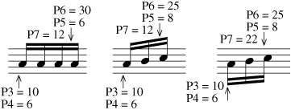 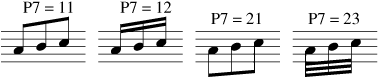
P7 note stem direction, number of beams.
P7 is always a two-digit number, <i>XY</i>, where <i>X</i> indicates the stem direction
(1 = stems up, 2 = stems down) and <i>Y</i> indicates the number of beams.
See P10 regarding tremolo beams.
P8 number over beam, split beams. 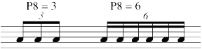
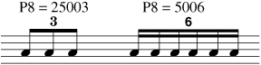
As seen above, the type font can be changed by adding a font number x 1000 to the tuplet number in P8. Use 34000 for font 00 (Times-Roman.)
Use the IF command to change all the tuplet numbers on beams on a page. For example, to change the tuplet number 3 to Palatino-Roman (font 12) type: IF P1=6 AND P8=3 THEN P8=12003.
Split beam editing.
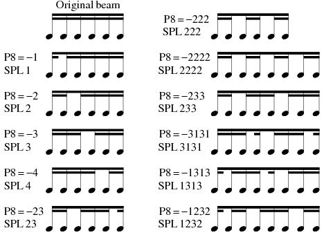
P9 is used in complex situations where some of the note stems do not
go in the same direction (e.g. notes on staff above or staff below).
P9 may have up to 3 digits, (using 0, 1, 2, 3 only). Here these digits
will be labeled "abc".
Digit "a" refers to P3 and P6 (left and right ends of the main beam).
Digit "b" refers to P11 and P12 (left and right ends of first added
partial beam).
Digit "c" refers to P14 and P15 (left and right ends of the second
partial beam).
The role of these digits is as follows:
0=no offset, 1=left beam end is offset, 2=right end offset, 3=both offset
**** When editing, set P9 to -1 to create the proper values automatically.
This use of P9 insures that the beam end points will exactly meet the
note stems.
Be sure to use the centering (CNX) and adjust (ADX) commands to make
sure that the beam ends and stem lengths are accurately placed.
P10 tremolo beams, partial beams.
Tremolo Beams:
For tremolo beams on note stems P7 should be negative (-10 = stems up,
-20 = stems down). P10 = number of beams.
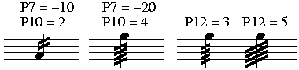
P12 can change width of
tremolo beams.
(P12 = 0 = default = 4)
(See also Code 1, P11 for tremolos attached to notes.)
Next demonstrates floating tremolo beams combined with attached main beams. P7 creates the complete main beam in the usual way. (See above.) In this case P10 is a two-digit number,
XY, where X indicates the number of complete beams and Y indicates how many additional floating beams are to be added.
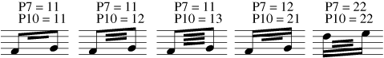
See below for tremolo beams added to individual notes combined
with main beams. P11 must have the note's P3 value.
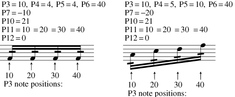
P11, P12 partial beams
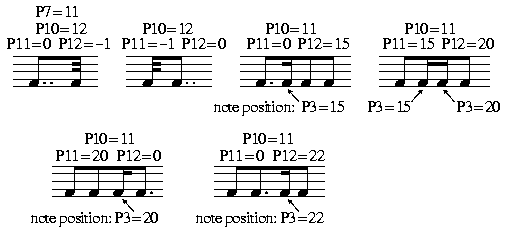
The next examples require two beam items to create the desired composite structure. In most cases the proper arrangement will be created during the normal input procedures.
In the first example below the partial beams appear in their default positions. The second example shows the desired arrangement. There is an editing shortcut for this:
Type FLR11 (flip P11, P12 to right) for the first partial.
Type FLR14 (flip P14, P15 to right) for the second partial.
If you type these commands again, the partials will return to their original positions.
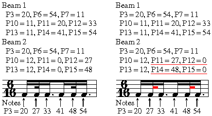
P13, P14, P15 added partial beams
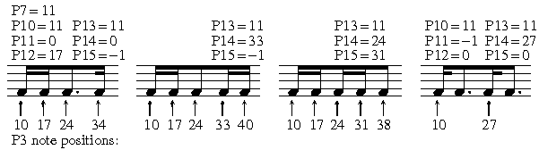
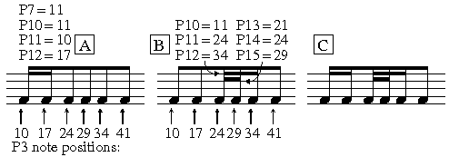
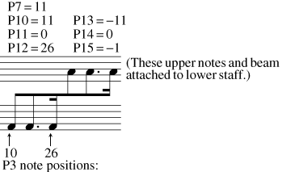
P14, P15 (P13=0) can offset the ends of a beam. P14 = left end, P15 = right end.
Type XOF to remove offsets.
P16 can change the horizontal position of a number over a beam.
P17 beam thickness. The default is 1 ( =
100%).
P18 If a note's size factor (P15) has been
changed, the beam's P18 should usually be set to the same value.
P19 can change the vertical position of a
number over a beam.
P20 If a note's width factor (P20) has been
changed, the beam's P20 should usually be set to the same value. (However if the
beam is centered on the group of notes using the CN command, there is automatic
compensation for the note widths and P20 need not be set.)
P21 can change the space between beams. The
default is 1 ( = 100%).
P25 layer number.
See Color Control.
P26 color/gray value.
See Color Control.
___________________________________________________________________________
----- Shortcut Letter Commands while editing Beams --------------------------
>>> Stem Adjustments
ADJ = adjust the note stems to the beam.
ADJX = adjust note stems when beam's implied stem direction is opposite.
ADF = adjust note stems to beam (F = in the French manner).
ADFX = adjust note stems when beam's stem direction is opposite.
FLI = flip the beam's implied stem direction.
FLR11, FLR14 = flip position of unattached partial beams.
AUTO = create the proper beam configuration depending on the note rhythms within the beam's span.
AUTOX = as above, but with some note stems going opposite directions.
CN = center the beam's endpoints on the nearest notes.
CNX = as above, but with some note stems going opposite directions.
LOFFM = left end offset minus
LOFFP = left end offset plus
ROFFM = right end offset minus
RPOFF = right end offset plus,
XOF = zero offsets
| F1 Help |
F2 Back to Previous Item |
F3 Forward to Next Item |
F4 Back to Previous Item, Same Code # |
F5 Forward to Next Item, Same Code # |
F6 . . . |
| F7 Move Left End Only |
F8 Move Right End Only |
F9 Exit from Edit Mode ( X ) |
F10 . . . |
F11 Delete, Move to Previous, Same Code # |
F12 Delete, Move to Next, Same Code # |